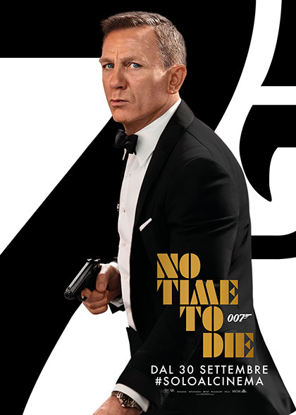

| Durata | Genere | Anno Uscita | Regista | Cast |
|---|---|---|---|---|
| 163minuti | Azione | 2021 | Cary Fukunaga |
Daniel Craig: James Bond Rami Malek: Lyutsifer Safin Léa Seydoux: Madeleine Swann Lashana Lynch: Nomi Christoph Waltz: Ernst Stavro Blofeld Ralph Fiennes: Gareth Mallory / M Ben Whishaw: Q Naomie Harris: Eve Moneypenny Rory Kinnear: Bill Tanner David Dencik: Valdo Obruchev Jeffrey Wright: Felix Leiter Ana de Armas: Paloma Dali Benssalah: Primo Billy Magnussen: Logan Ash Mounir Echchaoui: membro mafia |
Dopo aver lasciato i servizi segreti, Bond si gode una vita tranquilla in Giamaica. Tuttavia, la pace conquistata si rivela di breve durata quando il suo vecchio amico Felix Leiter gli chiede aiuto.
